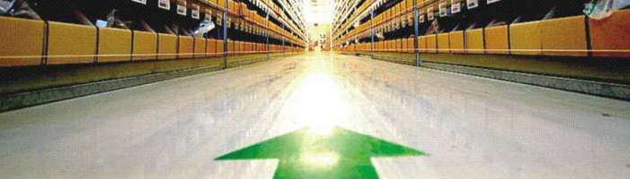

Преимущества для наших Слушателей

Почему слушатели выбирают обучение в школе логистов:
- Занятия проводят специалисты в области транспортного и складского бизнеса, имеющие многолетний опыт. Преподаватели в Школе логистов - это ведущие менеджеры по логистике и директора крупных логистических компаний Воронежской области, собственники бизнеса, которые стояли у истоков формирования логистики в Центрально-Черноземном регионе.
- Обучение проводится с анализом рабочих ситуаций и актуальных задач, включает в себя элементы тренинга деловых качеств. Это не скучные лекции от теоретиков, это интересные диалоги преподавателей и слушателей. Программа включает в себя необходимый минимум теоретических знаний и соответствующий набор практических упражнений, что позволяет слушателям курсов логистики сразу приступить к практической работе по избранной специальности!
- Небольшие группы слушателей (до 10 человек), так как для нас важно качество обучения.
- Достаточное внимание уделяется нормативно-правовой базе, современному законодательству в сфере логистики. Юристы с многолетним успешным опытом в логистическом бизнесе грамотно и интересно «преподносят» слушателям информацию об изменениях и тонкостях законодательства.
- Короткие сроки и удобное время обучения. Занятия проводятся 3-4 раза в неделю в Воронежском Лесотехническом Университете (ФГБОУ ВО "ВГЛТУ"), ул. Тимирязева, д. 8, с 17-00 до 20-00 часов. Длительность обучения 1,5 месяца.
- По окончании курса «Логистический менеджмент» слушатели получают 2 документа: сертификат НП Альянс Воронежских логистов, дающий преимущество при приеме на работу в логистические компании Воронежской области - участники НП Альянс Воронежских логистов и, конечно же, удостоверение о повышении квалификации ВГЛТУ установленного образца (Лицензия №1425 от 07 мая 2015г., серия 90Л01 № 0008419, выданная Федеральной службой по надзору в сфере образования и науки).
- Стажировка лучших слушателей курса проходит на крупном логистическом предприятии г. Воронежа.
- Трудоустройство слушателей по полученной специальности по результатам тестирования.
- Оптимальная стоимость и скидки курса «Логистический менеджмент». Стоимость обучения - 9 000 рублей.